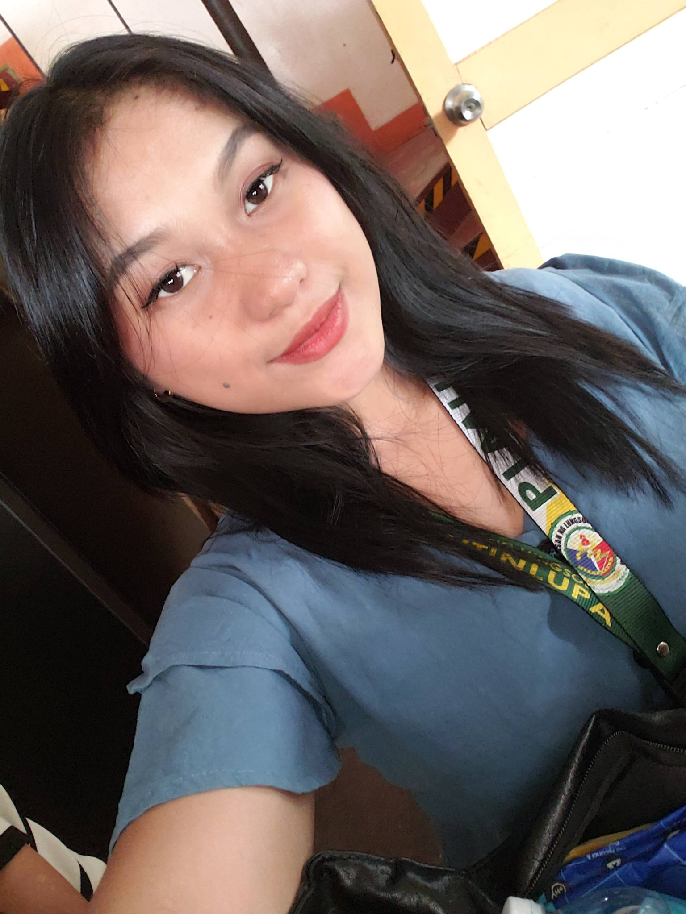
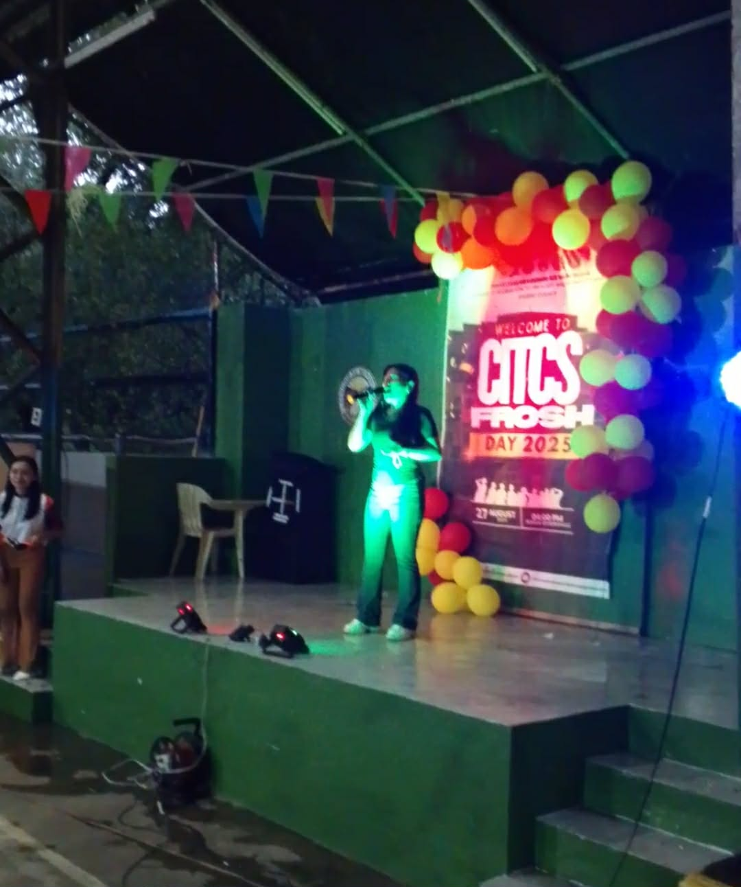
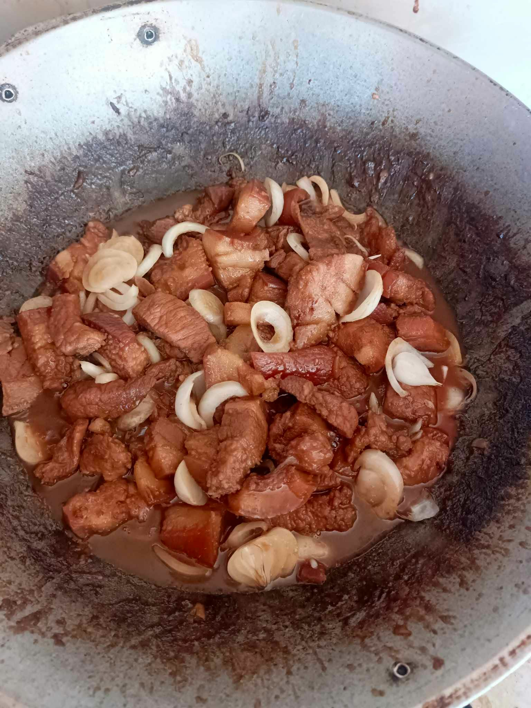
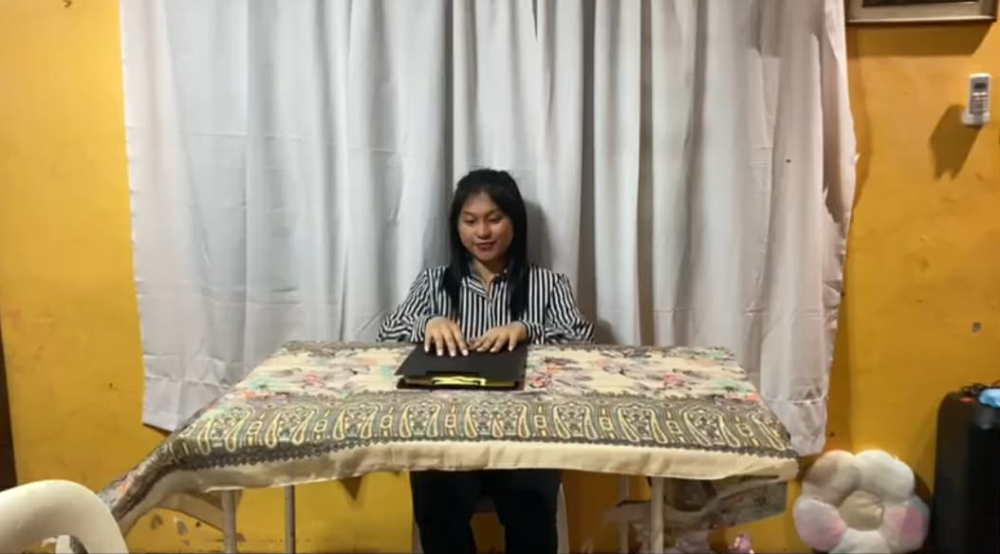
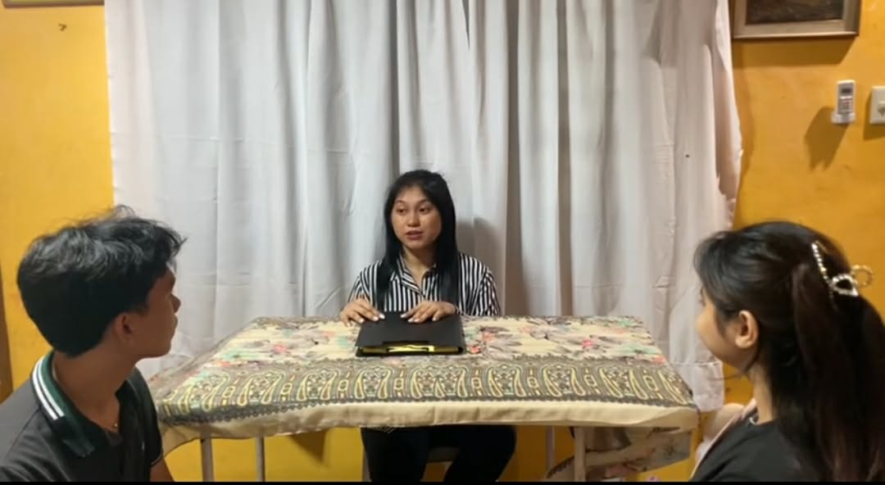
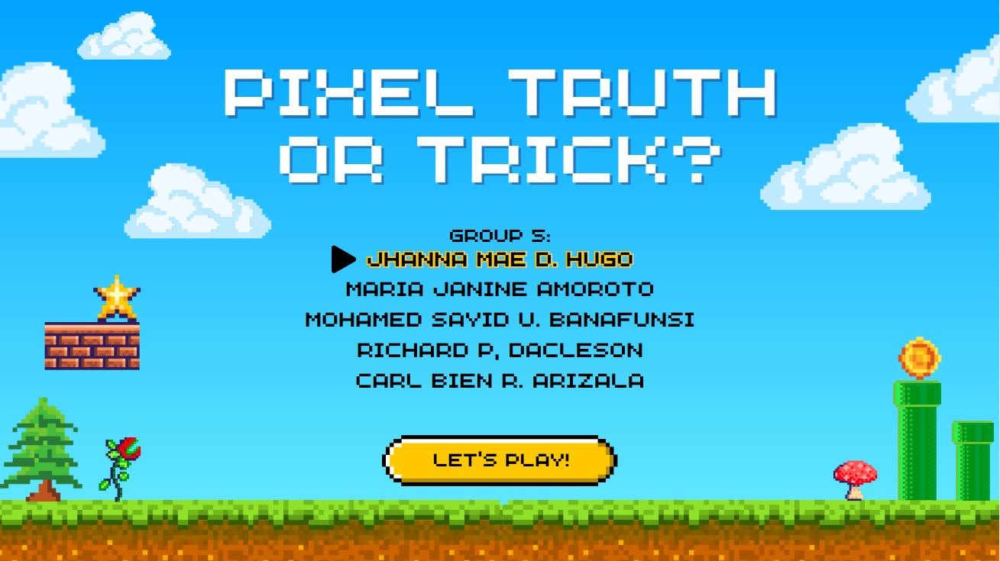
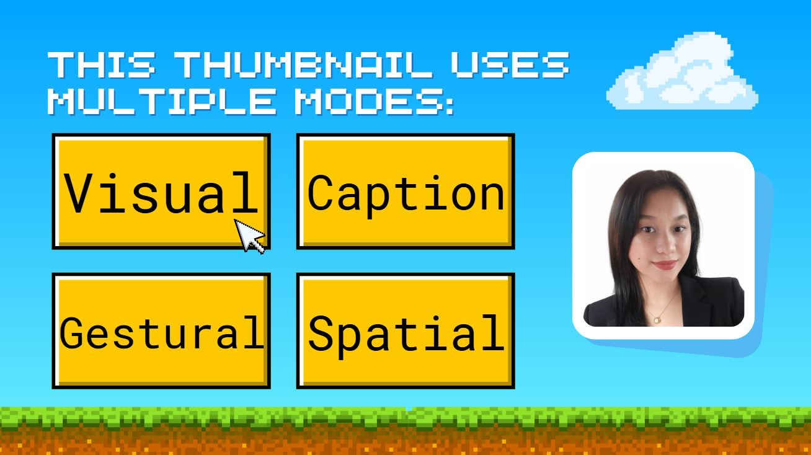

<!DOCTYPE html>
<html lang="en">
<head>
<meta charset="UTF-8">
<meta name="viewport" content="width=device-width, initial-scale=1.0">
<title>Maria Portfolio</title>

<link rel="stylesheet" href="css/profile.css">
<link rel="stylesheet" href="https://cdnjs.cloudflare.com/ajax/libs/font-awesome/6.5.0/css/all.min.css">

</head>

<body>

<!-- your navbar, sections, etc go here -->

<script>
function showSection(id) {
    const sections = document.querySelectorAll("section:not(.pros-cons)");
    sections.forEach(sec => {
        sec.style.display = "none";
    });

    const panels = document.querySelectorAll(".pros-cons");
    panels.forEach(p => p.classList.remove("active"));

    const active = document.getElementById(id);

    if (id === "home") {
        active.style.display = "flex";
    } else {
        active.style.display = "block";
    }
}

function toggleMoreInfo() {
    const section = document.getElementById("more-info");

    if (section.style.display === "block") {
        section.style.display = "none";
    } else {
        section.style.display = "block";
        section.scrollIntoView({ behavior: "smooth" });
    }
}

function scrollToProjects() {
    document.getElementById("projects").scrollIntoView({
        behavior: "smooth"
    });
}

function scrollToProjects() {
    showSection('projects'); // SWITCH SECTION
    setTimeout(() => {
        document.getElementById("projects").scrollIntoView({
            behavior: "smooth"
        });
    }, 100);
}

function toggleProsConsMaria() {
    console.log("BUTTON CLICKED"); 
    const panel = document.getElementById("pros-cons-maria");
    panel.classList.toggle("active");
}

window.addEventListener("load", () => {
    showSection('home');
});
</script>

</body>
</html>

   <body>

    <a href="index.html?skipIntro=true#profiles" class="back-btn">← Back to Profiles</a>

    <!-- NAVBAR -->
     <nav class="navbar">
        <ul>
           <li><a href="#" onclick="showSection('home')">HOME</a></li>
           <li><a href="#" onclick="showSection('about')">ABOUT</a></li>
           <li><a href="#" onclick="showSection('skills')">SKILLS</a></li>
           <li><a href="#" onclick="showSection('projects')">PROJECTS</a></li>
           <li><a href="#" onclick="showSection('contact')">CONTACT</a></li>
        </ul>
     </nav>

     <!-- HOME SECTION -->
<section id="home" class="home maria-bg">

    <div class="overlay"></div> <!-- DARK OVERLAY -->

    <!-- LEFT SIDE (TEXT) -->
    <div class="home-content">

        <!-- NEW SMALL IMAGE -->
         

        <h3 class="role">IT STUDENT</h3>
        <h1>MARIA AMOROTO</h1>
        <h2>BSIT-1R</h2>

        <p class="desc">
            A PLMUN IT student who is currently learning the basics of programming and web development. Actively developing technical skills through academic activities and simple projects, while striving to understand core concepts in the field. Motivated to improve, gain practical knowledge, and grow as a student through continuous learning and hands-on experience.</p>

        <div class="buttons">
            <button onclick="scrollToProjects()">▶ View Projects</button>
            <button onclick="toggleMoreInfo()" class="more-btn">More Info</button>
            <button onclick="toggleProsConsMaria()" class="pros-btn">⚡ Pros & Cons</button>
        </div>

    </div> 

</section>

<!-- MORE INFO SECTION (SEPARATE) -->
<section id="more-info" class="more-info">

    <div class="info-grid">

        <div>
            <h3>EDUCATION</h3>
            <ul>
                <li>BSIT - 1R (Current)</li>
                <li>Senior High School Graduate H.E Strand (2019-2021)</li>
            </ul>
        </div>

        <div>
            <h3>EXPERIENCE</h3>
            <ul>
                <li>Singing Contest Audition</li>
                <li>Research Project</li>
                <li>Web Developer</li>
            </ul>
        </div>

        <div>
            <h3>INTEREST</h3>
            <ul>
                <li>Cook</li>
                <li>Watch</li>
            </ul>
        </div>

        <div>
            <h3>LANGUAGES</h3>
            <ul>
                <li>English</li>
                <li>Filipino</li>
            </ul>
        </div>

    </div>

</section>
         
     <section id="pros-cons-maria" class="pros-cons">

        <div class="pc-container">

            <!-- HEADER -->
             <div class="pc-header">
                <h2>⚡ Pros & Cons</h2>
                <p>Strengths vs Weaknesses</p>
                <span onclick="toggleProsConsMaria()" class="close-btn">✖</span>
             </div>

            <!-- CONTENT -->
              <div class="pc-content">

                <!-- STRENGTHS -->
                 <div class="pc-box">
                    <h3>STRENGTHS</h3>
                    <div class="card">Being a student, wife, and mom makes me responsible, hardworking, and patient. I manage my time to balance school and family, and I stay motivated to give my family a better future.</div>
                    
                 </div>

                 <!-- WEAKNESSES -->
                  <div class="pc-box">
                    <h3>WEAKNESSES</h3>
                  <div class="card">I sometimes feel overwhelmed and tired from  many responsibilities. I struggle with time management and may feel guilty when I can’t give enough attention to everything.</div>
                    
              </div>

        </div>

       </section>


      <!-- ABOUT -->
       <section id="about" class="about">

        <h1 class="about-title">WHAT I DO</h1>

        <!-- ITEM 1 -->
         <div class="about-row">
            <div class="about-text">
                <h3>I SING</h3>
                <p>I express myself through singing, as it has always been one of my greatest passions. Ever since I was young, I have enjoyed listening to music and trying to sing along to my favorite songs. Over time, singing became more than just a hobby—it became my way of expressing my feelings and emotions. I may not always perform on big stages, but I enjoy singing whenever I have the chance, whether I am alone or with friends. Music gives me comfort and helps me relax, especially during stressful or emotional moments. It allows me to say things that I sometimes cannot put into words. For me, singing is not just about talent, but about expressing who I am and finding happiness in every note.</p>
            </div>

            <div class="about-img">
                
            </div>
         </div>

         <!-- ITEM 2 -->

         <div class="about-row reverse">
            <div class="about-text">
                <h3>I COOK</h3>
                <p>Cooking is something I genuinely enjoy because it allows me to create something meaningful from simple ingredients. I like exploring different dishes, learning new techniques, and improving my skills over time. Being in the kitchen gives me a sense of focus and calm, especially when I am trying out new recipes or perfecting a meal. I also find happiness in sharing the food I make with others, knowing that it can bring comfort and enjoyment. For me, cooking is not just a task, but a passion that reflects patience, creativity, and dedication.</p>
            </div>

            <div class="about-img">
                
            </div>

         </div>

       </section>

      <!-- SKILLS --> 
       <section id="skills" class="skills-box">

        <h1 class="skills-title">SKILLS

            <div class="skills-wrapper">

            <!-- LEFT: BLACK BOX (TEXT ONLY) -->
            <div class="skills-content maria-skills-content">

               <h3>🧠 WHAT I DO BEST</h3>

               <ul>
                    <li>I can act and I can be a makeup artist. I enjoy expressing myself through different roles and bringing characters to life, whether on stage or in front of the camera. Acting allows me to explore different emotions and personalities, helping me become more confident and creative. At the same time, I have a passion for makeup artistry, where I can enhance beauty and transform looks through my skills and imagination. I love experimenting with different styles, colors, and techniques to create unique and expressive designs. Both acting and makeup give me the freedom to showcase my creativity and express who I am in different ways.</li>
                    </ul>

                </div>

                    <!-- RIGHT: IMAGES -->
                     <div class="skills-images">
                        
                        

                     </div>

                </div>
                        
        </h1>
       </section>


       <!-- PROJECTS -->
        <section id="projects" class="projects">

            <h1 class="projects-title">PROJECTS</h1>

            <div class="projects-container">

                <!-- LEFT SIDE -->
                 <div class="projects-left">

                    <div class="project-box">
                        <h3>CANVA PRESENTATION</h3>
                        <p>
                        I reported a topic using Canva as my visual aid to present the information clearly and effectively. During my report, I used slides with simple layouts, graphics, and labeled sections to help explain each point in an organized way. The visuals supported my discussion by making the ideas easier for the audience to follow while I explained them step by step. By combining brief text with visuals, I was able to deliver my report in a more engaging and understandable manner. Overall, Canva helped me present my topic smoothly and communicate my ideas with clarity.</p>

                    </div>

                </div>

                <!-- RIGHT SIDE -->
                 <div class="projects-right">
                    
                    
                 </div>

            </div>

        </section>

        <!-- CONTACT -->
         <section id="contact" class="contact">
            <div class="contact-container">

                <!-- LEFT SIDE -->
                 <div class="contact-info">
                    <h1>LET'S WORK TOGETHER</h1>

                    <p><strong>Email</strong><br>mariajanineamoroto@gmail.com</p>
                    <p><strong>Phone</strong><br>+63 991 846 3380</p>

                    <p><strong>Follow me</strong></p>
                    <div class="socials">
                        <a href="https://www.facebook.com/Mariajanine.subestia" target="_blank">
                            <i class="fab fa-facebook"></i>
                        </a>

                        <a href="https://www.instagram.com/msjanine_amoroto/" target="_blank">
                            <i class="fab fa-instagram"></i>
                        </a>
                     </div> 
                     
                </div>

                <!-- RIGHT SIDE -->
                 <div class="contact-form">
                    <input type="text" placeholder="Name">
                    <input type="email" placeholder="Email">
                    <textarea placeholder="Message"></textarea>
                    <button>Submit</button>
                 </div>
         </section>

</body>
</html>